關於本工具
化學基本定律虛擬實驗室 (Chemical Laws Virtual Lab) 由 超狂阿明 
(CrazyRM) 開發與維護。
🚀 更多互動模擬：歡迎探索超狂阿明開發的其他化學、理科科學互動模擬實驗室與專案。直通網址：bit.ly/crazyrm
版權與使用限制
© 2026 超狂阿明 (CrazyRM)。本應用程式、介面設計、程式邏輯、教學內容與產出格式，除另有明確標示外，均保留所有權利。
本工具提供教學、展示、研究與個人學習用途。未經作者書面同意，請勿重製、散布、改作、反向工程、移除作者資訊，或將本工具及其衍生內容用於商業服務、收費課程、出版品、機構部署或其他營利用途。
若需商業授權、客製化開發、校園或機構導入，請先聯絡作者取得授權。
聯絡與支持